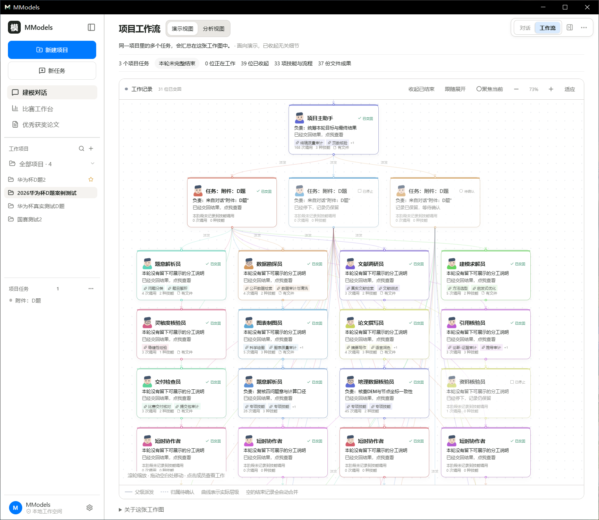
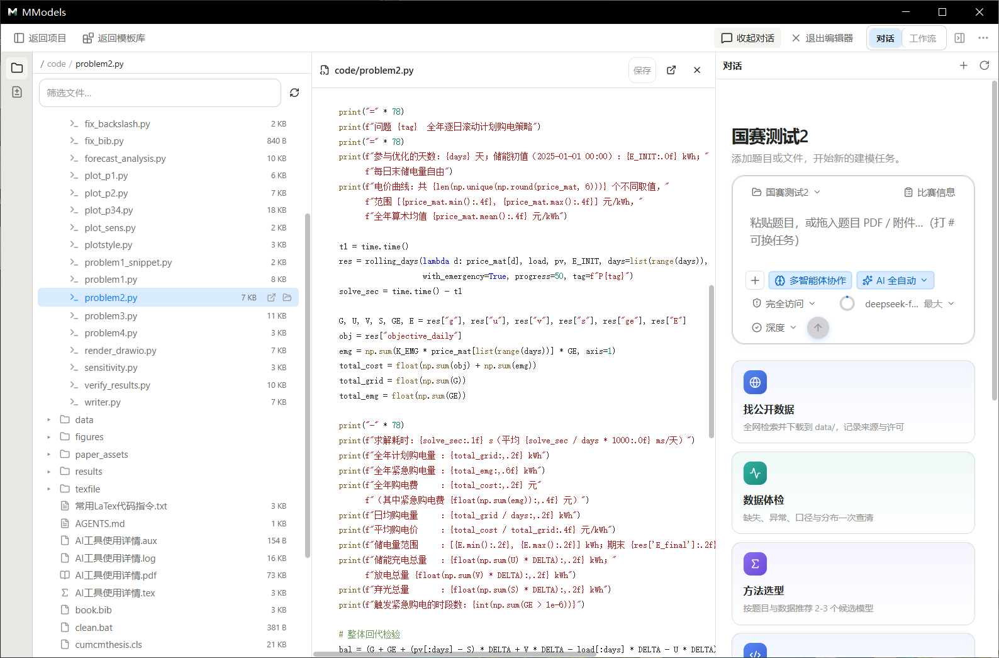
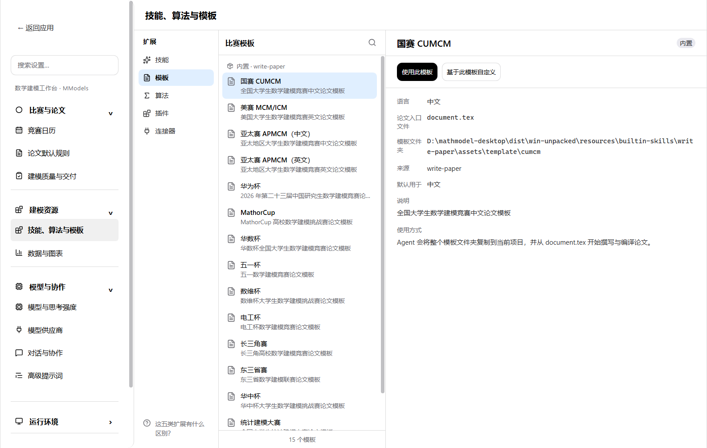
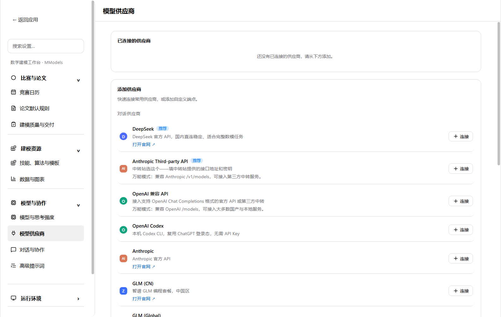
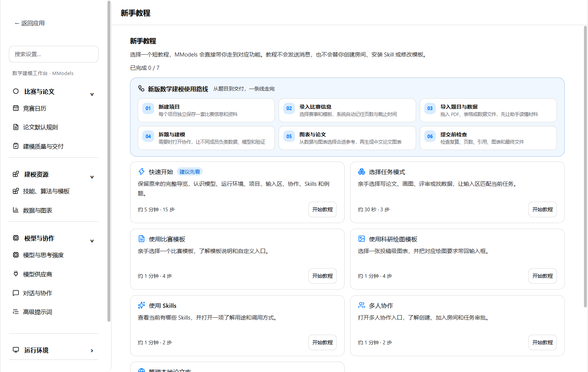

开局：把题目放进来，家就安好了
新建一个项目，题目 PDF、数据文件、代码、论文全部归拢在一处。左侧是项目与任务，右侧是文件与版本——不用再管理一堆散落的文件夹。


一个 #，选定这一轮的打法
不用记指令。在输入框打一个 #，全部任务一列排开：全流程论文写作固定置顶，参赛冲刺、图表工坊、评阅诊断、数据勘探，以及摘要、文献、页数核验这些细分活儿。方向键选、回车确认。


用哪个模型、做多细、谁说了算，都摆在台面上
模型、思考强度、任务深度、决策方式、文件权限——每个按钮点开都有明确的选项，不用去猜软件会怎么干。


一支看不见的队伍，正在替你分工
复杂的任务不再是单打独斗：主助手把题目拆开，题意解析、数据勘探、文献调研、建模求解、灵敏度核验、制图、写论文、核引用、交付检查——每位成员做什么、用了哪些方法、交回了什么，图上清清楚楚。




工作流：谁在工作、交回了什么，全部可回放
演示视图讲给队友和评委听，分析视图给你自己复盘：这轮调用了哪些技能、推进到哪一步、卡在哪里——不是黑盒。


数据放进来，图就出来了
把 CSV 交给它：左侧选文件，右侧立刻出图；X 轴 Y 轴随意换，折线、散点、箱线随你挑——不用写一行画图代码。


图表库：建模论文里常见的图，这里都有样板
不知道该画什么图？按建模场景挑：流程、分布、回归、相关、预测、比较、评价、网络、三维、层级——选一张就是起点。


论文成稿：写出来、查一遍、交出去
论文库收着你的成稿与投稿状态；比赛信息决定页数与格式；分享弹窗把优秀论文归档成团队的参考资产。


比赛节奏：日历提醒、交付检查，一条线管到底
竞赛日历盯着报名时间与截止点；比赛工作台把「论文完成了吗」拆成一项项可检查的状态——缺什么回哪里补。


自动化：定时的活儿，交给定时器
每日数据复盘、每周论文进度检查——排好时间表，到点自己跑；跑没跑成、跑了多久，历史记录都在。


编辑器视图：代码和论文并排放着改
一键切进编辑器布局：文件树、代码区、对话同屏——代码有代码的颜色，文档有文档的样子，改完直接跑。

算法与模板：建模的老朋友，都在库里
线性规划、遗传算法、AHP、TOPSIS、灰色预测、ARIMA……二十多个常用方法按场景分好类，依赖是否就绪一目了然；还有技能、模板、连接器随时可装。



偏好：从模型到桌面小模，全按你的习惯来
十六个设置分区覆盖所有偏好——每个开关都有说明，改完立刻生效。






从今晚拿到题目，
到后天早上交出论文。
把题目放进 MModels，剩下的路，让它陪你一起走。